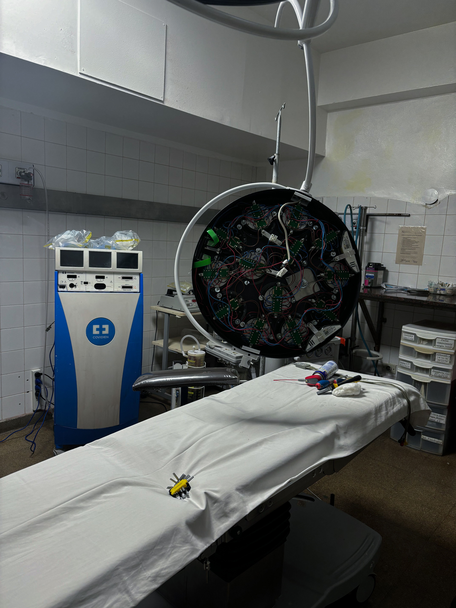
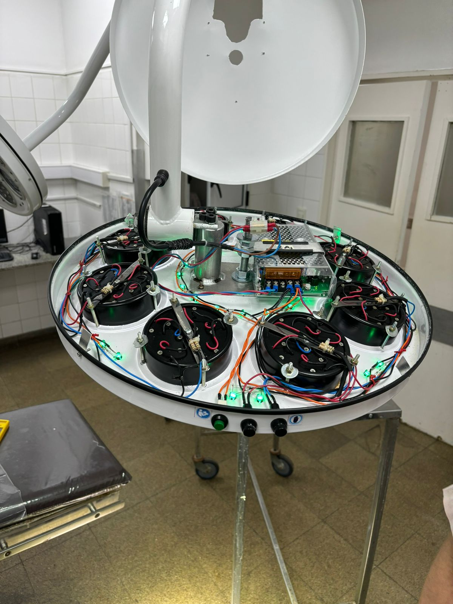
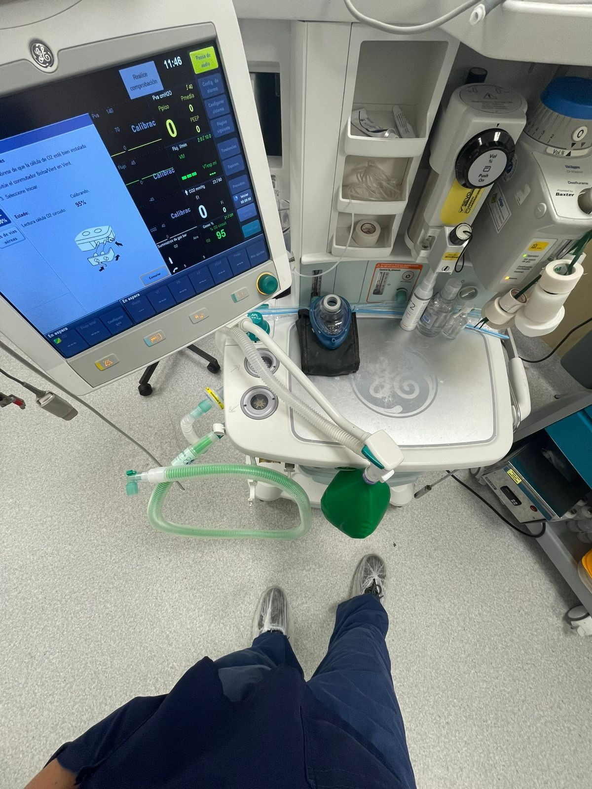
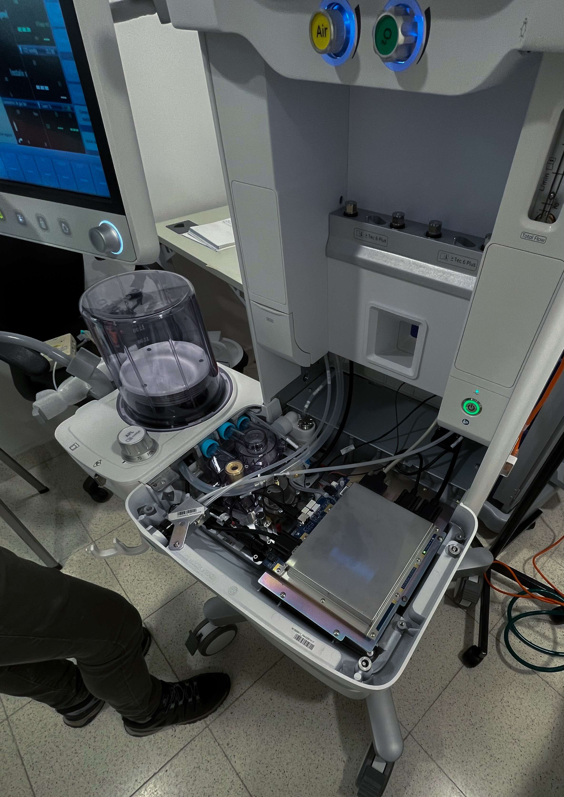
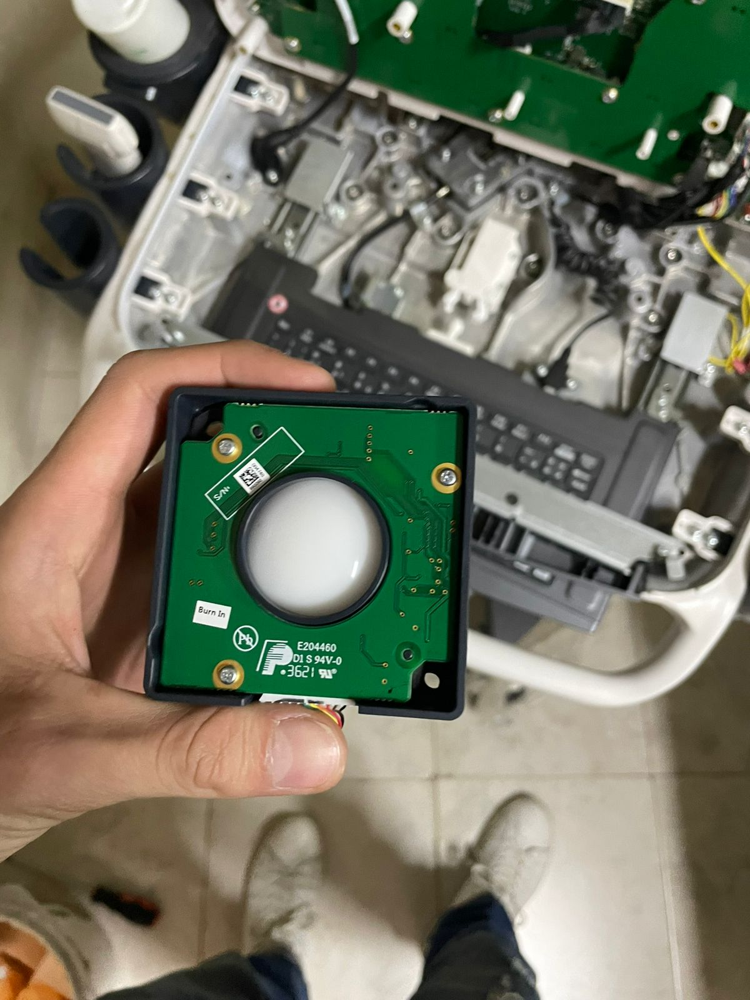
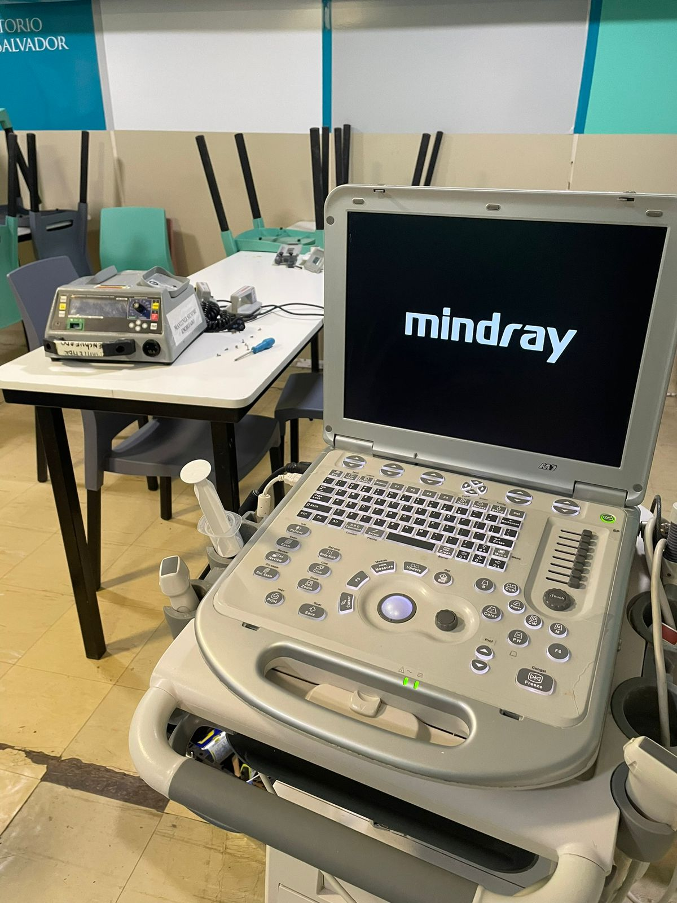

Entendemos que cada equipo médico exige protocolos de servicio y diagnóstico específicos. Por eso, brindamos soporte técnico bajo estándares de fábrica para asegurar la máxima disponibilidad de todo su parque tecnológico.
Desde ecógrafos de alta complejidad hasta equipos de diagnóstico básico: cada tipo de dispositivo recibe un protocolo de servicio específico.
Soporte técnico para toda la gama de ecógrafos: portátiles, de sala y de alta gama. Diagnóstico, reparación, calibración y actualización de software con acceso a piezas originales a través de Sonocare.
Mantenimiento y reparación de monitores multiparamétricos. Verificación de sensores, alarmas, módulos de medición y pantallas. Equipos de UCI, quirófano y sala general.
Servicio técnico de desfibriladores manuales y automáticos. Verificación de descarga, reemplazo de electrodos, mantenimiento de baterías y calibración según normas de seguridad eléctrica.
Diagnóstico y reparación de ventiladores para UCI y sala. Verificación de válvulas, sensores de flujo y presión, sistemas de alarma y software de control de ciclos ventilatorios.
Mantenimiento preventivo y correctivo de bombas de jeringa e infusión. Verificación de precisión de caudal, alarmas de oclusión y baterías.
Servicio técnico de equipos de radiología portátil. Revisión de generadores, sistemas de alimentación y mecanismos de posicionamiento.
Mantenimiento y calibración de unidades de electrocirugía. Verificación de potencia de salida, modos de corte y coagulación, y sistemas de seguridad.
Diagnóstico y reparación de equipos varios: electrocardiógrafos, oxímetros, tensiómetros digitales y equipos de laboratorio básico.
¿No ve su equipo? Contáctenos. Evaluamos cada caso individualmente.
Conocé el equipamiento con el que trabajamos y los trabajos que realizamos en instituciones de Misiones y el NEA.


Ecógrafo Mindray



Contáctenos con el modelo y la falla o necesidad de mantenimiento. Le respondemos a la brevedad.